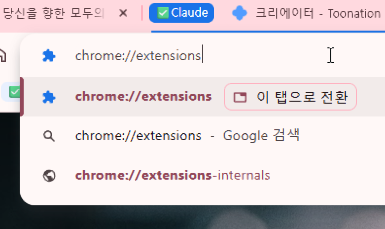
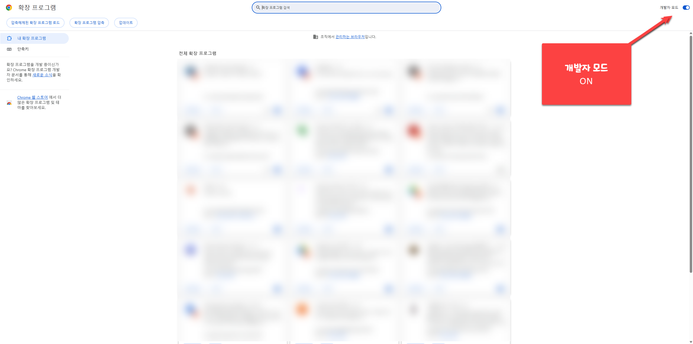
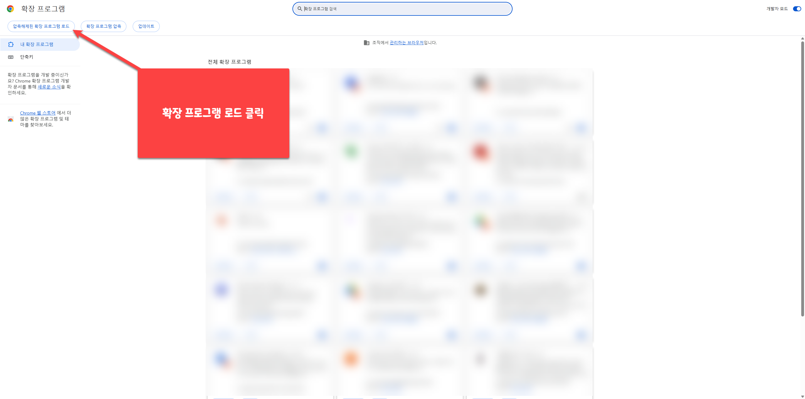
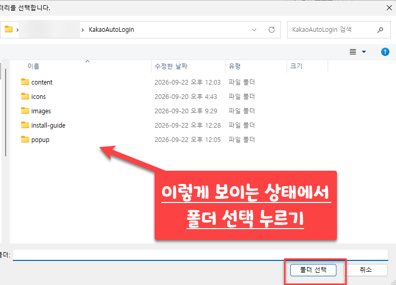
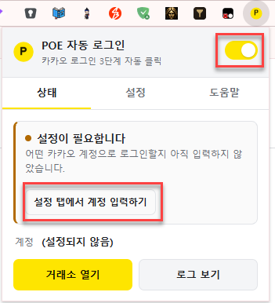
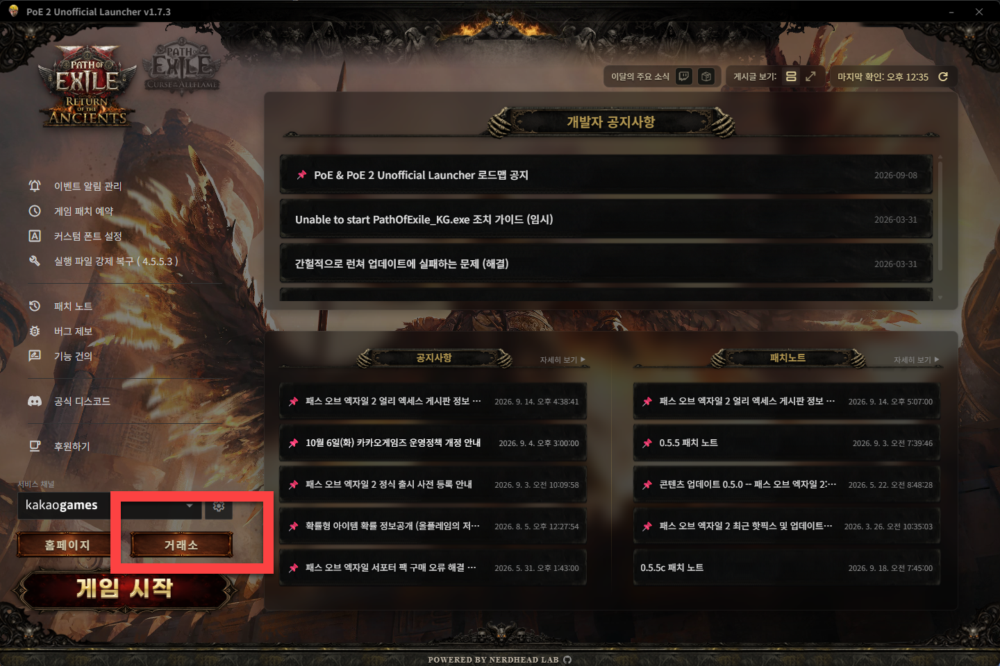

POE 카카오 자동 로그인 — 설치 방법
거래소에 들어갈 때마다 반복했던 로그인 → 카카오 로그인 → 계정 선택 3번의 클릭을 크롬이 알아서 눌러주는 확장 프로그램입니다. 아래 단계를 순서대로 따라 하세요.
확장 프로그램 관리 페이지 열기
크롬 주소창에 chrome://extensions 를 입력하고 Enter 를 누릅니다.

install-guide/images/step1.png개발자 모드 켜기
오른쪽 위의 개발자 모드 토글을 켭니다. 켜면 왼쪽 위에 버튼 3개가 새로 나타납니다.

install-guide/images/step2.png"압축해제된 확장 프로그램 로드" 클릭
왼쪽 위에 나타난 압축해제된 확장 프로그램 로드 버튼을 클릭합니다.

install-guide/images/step3.pngKakaoAutoLogin 폴더 선택
KakaoAutoLogin 폴더로 들어가서, 안에
content · icons · images ·
install-guide · popup 폴더가 보이는 상태에서
폴더 선택을 누릅니다.
안쪽 폴더를 하나 더 들어가면 안 됩니다. (manifest.json 이 있는 위치입니다.)

install-guide/images/step4.png아이콘 고정 & 내 카카오 계정 입력 (처음 한 번만)
툴바의 퍼즐(🧩) 아이콘 → 핀을 누르면 노란 P 아이콘이 상단에 고정됩니다. 그 아이콘을 눌러 아래처럼 설정해 주세요.
- 처음에는 "설정이 필요합니다" 가 뜨는 게 정상입니다. (미리 입력된 계정은 없습니다)
- 오른쪽 위 스위치가 켜져 있는지 확인합니다.
- [설정 탭에서 계정 입력하기] 를 누르고 내 카카오 계정 이메일을 입력합니다. 카카오 계정 선택 화면에 보이는 그 이메일을 그대로 적으면 됩니다.
- 입력하면 바로 저장됩니다. 저장 버튼은 없습니다.

install-guide/images/step5.png런처에서 "거래소" 눌러 확인
PoE 2 Unofficial Launcher 왼쪽 아래 서비스 채널이 kakaogames 인 상태에서
거래소 버튼을 누릅니다.
크롬이 열리고 클릭 한 번 없이 로그인된 거래소 화면까지 들어가면 성공입니다.

install-guide/images/step6.png
✅ 여기까지 하면 끝입니다
6단계에서 자동 로그인이 한 번 되는 것만 확인하면,
이후로는 설정창을 다시 열 일이 없습니다.
PC를 재부팅해서 로그인이 풀려도 —
Unofficial Launcher에서 "거래소"만 누르면 로그인까지 알아서 처리됩니다.
잘 안 될 때
- 확장 아이콘을 눌러 스위치가 켜져 있는지 확인
- 설정 탭의 계정 이메일이 실제 로그인하는 카카오 계정과 같은지 확인
- 아이콘에 빨간 ! 배지가 떴다면 팝업 상태 탭에 실패 이유가 한국어로 적혀 있습니다. [다시 시도할 수 있게 초기화] 를 누른 뒤 다시 시도하세요.
- 크롬 프로필(계정)을 여러 개 쓴다면 프로필마다 따로 설치해야 합니다.